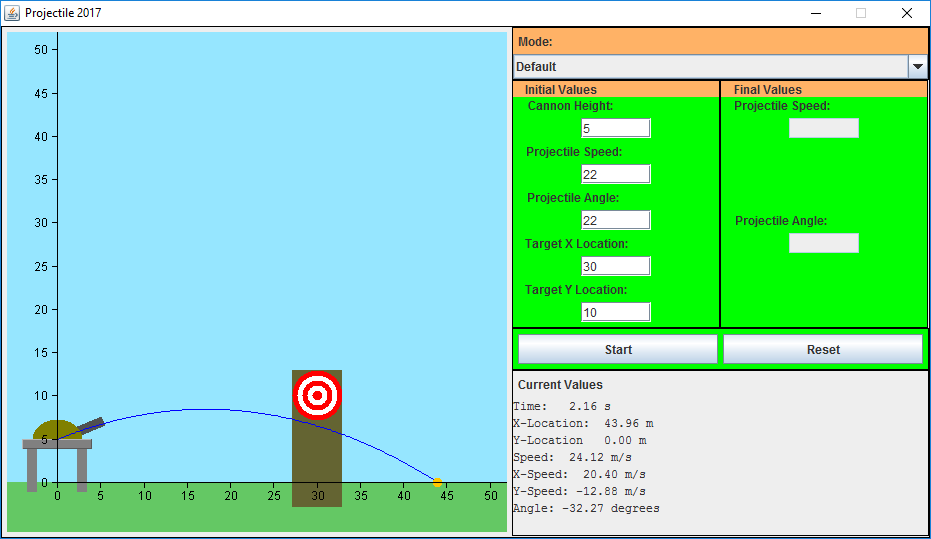

Projectile 2017
This is a projectile motion simulator. A cannon ball is animated in real time and view live values for the projectile's speed, location and angle. It can be used to solve Grade 12 physics problems involving initial speed, angle and final distance. Have fun challenging yourself to hit the target and finish your kinematics homework! This software was written in Java.
DOWNLOAD EXE
SOURCE CODE
Instructions for Windows
- Click on the DOWNLOAD EXE button and wait for the download to begin
- Save Projectile 2017 Release.zip to your computer
- Right click the file and select "Extract all..." to extract the files
- Read User Manual.docx for instructions on how to use the program
- Make sure to have the latest version of Java installed
- Open Projectile2017.exe which is inside the Projectile 2017 folder
Instructions for Linux
- Click on the SOURCE CODE button to see the GitHub page
- Save Projectile2017.jar to your computer
- Make sure to have Java (e.g. OpenJRE) installed
- Read User Manual.docx for instructions on how to use the program
- The JAR file can be executed using Java Runtime Environment or on the command line: java -jar Projectile2017.jar